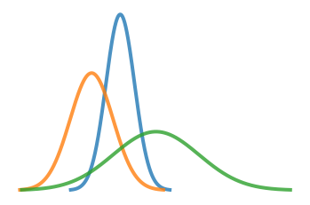

About Me
I’m a self-taught data scientist interested in causal inference and bayesian methods. I mainly use this blog to practice what I learn, but hopefully others find this helpful as well!
Useful Tools for Weibull Survival Analysis
survival analysis
The Weibull distirbution is an excellent choice for many survival analysis problems - it has an interpretable parameterization that is highly flexible to a large number of phenomenon. The main advantage is that it can model how the risk of failure accelerates over time. This post will focus on the \(\text{Weibull}(k, \lambda)\) parameterization, although I hope to cover the Gumbel reparameterization in the future.
Why do we need A/B tests? The Potential Outcomes Model
experimentation
This blog post introduces the Potential Outcomes Model and introduces why experiments are often necessary to measure what we want. This topic is already covered extensively in other more rigorous resources. This post provides just another example.
No matching items